Git&Github的初学者教程
本文是我在学习廖雪峰的Git教程的一些笔记与个人理解，如果想要学的更基础更细可以前往廖雪峰的Git教程
Git与Github是什么
Git
在开始学习 Git 之前，我们先思考一个实际的问题。
假设你正在开发一个网站。刚开始的时候，项目只有一个简单的首页，你觉得很满意，于是继续添加新的功能。几天之后，你增加了登录功能，又修改了页面样式，还尝试加入了一些新的交互效果。
但是某一天，你发现项目出现了问题：某个功能突然无法使用，而你已经修改了很多文件，完全不知道是哪一次修改导致的。
这时候，你可能会想：“有没有一种方法，可以记录每一次修改，并且让我随时回到之前正常的版本？”
这就是 Git 要解决的问题。
如果你玩过 Steam 游戏，可以把 Git 理解成游戏中的存档系统。游戏中的存档可以记录你当前的进度，当你做出了错误选择或者遇到无法解决的问题时，可以读取之前的存档重新开始。例如下图：
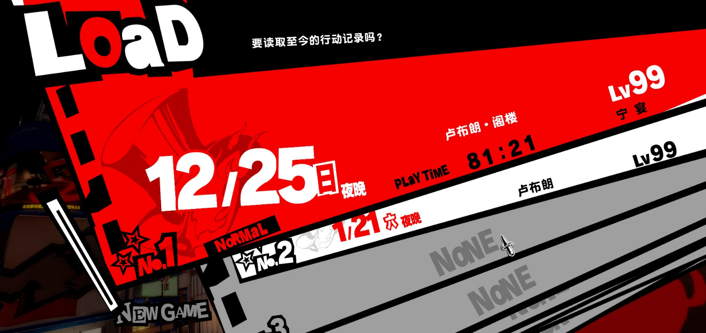
Git 的作用也是类似的。
在开发过程中，每当你完成一个重要阶段，都可以保存当前项目的状态。这个保存过程在 Git 中叫做 commit（提交）。不同的 commit 就像不同时间创建的游戏存档，它们记录着项目在不同阶段的状态。
因此，简单来说：Git 是一个帮助我们记录代码变化、管理项目历史的版本控制工具。以官方的定义来说，Git是目前世界上最先进的分布式版本控制系统。
不过，Git 有一个特点：它主要运行在你的本地电脑上。也就是说，你可以在自己的电脑中使用 Git 来管理项目，即使没有网络也没有问题。
但是，这里又产生了问题：如果电脑损坏怎么办？如果想换一台电脑继续开发怎么办？如果想让别人看到你的代码，或者和其他人一起开发怎么办？
这时候，就需要 GitHub。
Github
GitHub 可以理解为 Git 的“云端仓库”。如果把 Git 比作电脑中的游戏存档，那么 GitHub 就类似 Steam 的云存档功能。如下图：
游戏存档原本只保存在你的电脑里，通过云同步之后，你可以在另一台电脑继续游戏。Git 也是一样。你可以把本地 Git 仓库上传到 GitHub，让代码保存在远程服务器中。
很多初学者会认为 GitHub 就是 Git，其实它们的关系更像是“工具”和“平台”的关系。
Git 是负责管理版本的工具，它关注的是：“我的代码经历了哪些变化？”.而 GitHub 是提供远程存储和协作功能的平台，它关注的是：“如何让这些代码可以被保存、分享，并且让多人一起开发？”
你完全可以只使用 Git，而不使用 GitHub。 但是，如果你希望把项目上传到网络，让其他人访问或者参与开发，那么 GitHub 就非常有用了。
在实际的软件开发过程中，Git 和 GitHub 通常会配合使用。
一个典型流程是这样的：你首先在电脑上创建项目，然后使用 Git 保存每一次重要修改。当项目达到一定阶段后，把代码上传到 GitHub。之后，如果团队成员需要参与开发，他们可以从 GitHub 获取项目，并继续修改。
所以，在开始学习 Git 的时候，你只需要先记住三个概念：
Git 是一个版本控制工具，负责记录代码的变化。
GitHub 是一个代码托管平台，负责保存 Git 仓库，并提供协作能力。
两者结合起来，可以让我们更加安全、高效地管理代码。
接下来，我们会从安装 Git 开始，让你的电脑真正具备代码版本管理能力。
Git安装与配置
Git安装
本文此处仅介绍windows版本的安装方法。如果是别的系统，请前往廖雪峰的Git安装教程
方法一：直接从Git官网下载安装程序，然后自行选择选项安装即可。
搜索Git - https://git-scm.com/ -> “Install for Windows”
点进后，显示如图页面，直接点击箭头处内容下载即可。默认选择默认安装路径即可，如若想更改路径，务必使用英文路径

默认编辑器我们推荐选择VSCode：


后续建议直接选择默认选项即可，如果想要知道其选项具体含义，可以前往以下网站：
一般来说，我们只要在开始菜单或者桌面找到Git Bash，点击后蹦出一个如图的命令行窗口，就可以说明Git安装成功了。
Github账号注册
我们需要一个Github账号，将其与我们的Git绑定，这样我们就可以进行我们项目上传了。
首先先进入Github，如果进不去，可以使用Watt toolkit这类软件，如果有更好的就更好了，这边就不做推荐了:)
然后自己进行注册即可。下图就是已经注册成功，你可以自己改动一些个性化内容：
配置Git
我们安装完Git的第一步，就是给我们记录一个名字和Email地址：
git config --global user.name "Your Name"
git config --global user.email "email@example.com"其中的名字和邮箱按理说可以随意取，但是如果你想关联到自己的Github账号的话，将邮箱与Github的邮箱保持一致。
且后面想要查看自己的信息，可以使用:
git config --global --list后面想要更改名字与邮箱再设置一次即可，但是修改后只影响未来的新commit。以前已经提交的 commit 里的作者信息不会自动改变。
注意git config命令的--global参数，用了这个参数，表示你这台机器上所有的Git仓库都会使用这个配置，当然也可以对某个仓库指定不同的用户名和Email地址。只要进入对应文件夹，使用前面的设置代码即可。
如何更新版本库
工作区、暂存区、版本库
在这部分，我们先介绍一下工作区、暂存区、版本库这三个概念：
工作区(Working Directory): 就是你在电脑里能看到的目录，比如我的
My_site文件夹就是一个工作区：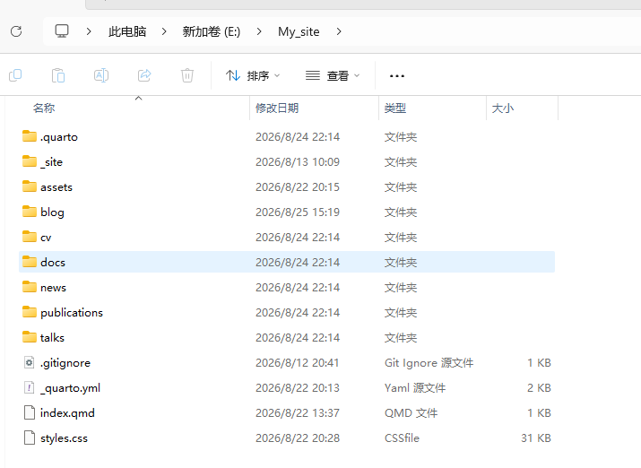
版本库(Repository): 工作区有一个隐藏目录
.git，这个不算工作区，而是Git的版本库。什么是版本库呢？版本库又名仓库（Repository），你可以简单理解成一个目录，这个目录里面的所有文件都可以被Git管理起来，每个文件的修改、删除，Git都能跟踪，以便任何时刻都可以追踪历史，或者在将来某个时刻可以“还原”。
Git的版本库里存了很多东西，其中最重要的就是称为
stage（或者叫index）的暂存区，还有Git为我们自动创建的第一个分支main(一般来说是master，此处是main是因为我们前面安装Git的时候设置的)，以及指向main的一个指针叫HEAD。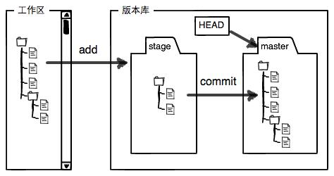
我们可以简单的理解为，我们本地库的内容，会通过Git上传到版本库的暂存区，即stage，然后再转移到我们指针HEAD指着的分支，默认为main
使用命令行进行一次提交
此部分我们以流程来介绍：
创建空目录
先选择一个合适的地方，创建一个空目录，可以手动建立，也可以进入某个目标文件夹使用
mkdir xxxx然后使用
cd xxxx进入我们新建的文件夹。可以使用
cd,显示当前目录。此处我们新建文件夹
learngit_1：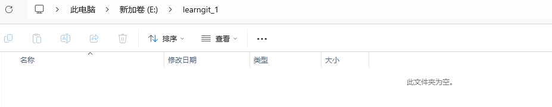
把目录变成Git可以管理的仓库
我们可以通过
git init来执行这个事情,输入即可,输出如下：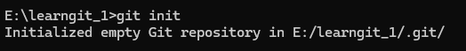
瞬间Git就把仓库建好了，而且告诉你是一个空的仓库（empty Git repository），细心的读者可以发现当前目录下多了一个
.git的目录，这个目录是Git来跟踪管理版本库的，没事千万不要手动修改这个目录里面的文件，不然改乱了，就把Git仓库给破坏了。如果你没有看到
.git目录，那是因为这个目录默认是隐藏的，用dir /a命令就可以看见更改并上传文件库内容
现在，我们可以编写一个
readme.txt文件，内容随意。一定要放到
learngit_1目录下（子目录也行），因为这是一个Git仓库，放到其他地方Git再厉害也找不到这个文件。和把大象放到冰箱需要3步相比，把一个文件放到Git仓库只需要两步。
第一步，用命令
git add告诉Git，把文件添加到仓库: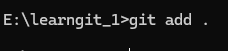
一般来说，这个指令是
git add readme.txt,但是如果我们想要直接上传该文件夹内的全部修改，可以使用git add .。执行上面的命令，没有任何显示，这就对了，Unix的哲学是“没有消息就是好消息”，说明添加成功。
第二步，用命令
git commit告诉Git，把文件提交到仓库：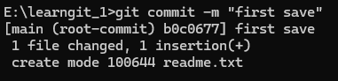
简单解释一下
git commit命令，-m后面输入的是本次提交的说明，可以输入任意内容，当然最好是有意义的，这样你就能从历史记录里方便地找到改动记录。嫌麻烦不想输入-m “xxx”行不行？确实有办法可以这么干，但是强烈不建议你这么干，因为输入说明对自己对别人阅读都很重要。
git commit命令执行成功后会告诉你，1 file changed：1个文件被改动（我们新添加的readme.txt文件）；1 insertions：插入了一行内容（readme.txt有一行内容）。
这样我们就完成了一次从本地库到版本库的上传全过程。
使用 VSCode 来进行一次提交
上面的指令有的人并不想记，这时候我们就推荐例如VSCode的这类可视化工具，我们只需要点按钮即可完成与代码一致的效果。
创建空目录
相同的，我们也要新建一个文件夹来解释我们的流程，此处新建的文件夹为
learngit_2: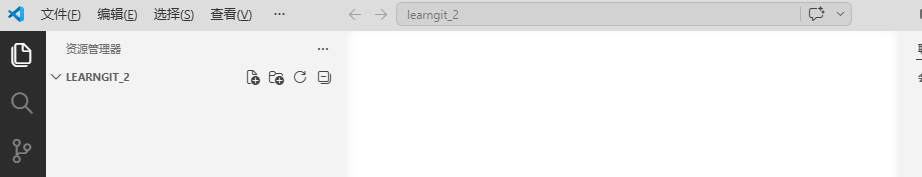
把目录改成Git管理的仓库 我们可以根据下图的箭头，点击
源代码管理按钮进入此界面，然后点击初始化仓库，这一步与我们前面的git init的效果完全一致：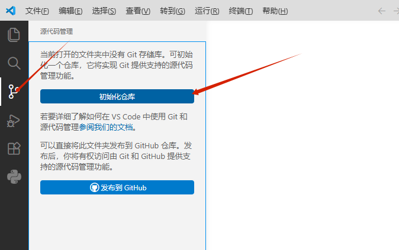
更改并上传文件库内容
现在我们同样可以编写一个
readme.txt文件，内容同样随意，例如此处我们填写如下：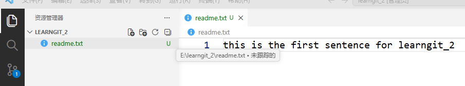
我们可以看到，我们的
源代码管理按钮右下角出现了一个数字”1”，这代表了现在的本地库与版本库内容存在一处差异。“未追踪”的含义是，这个文件是新建的，这些内容推荐读者多尝试一下，就能理解其含义了。这之后我们就可以点击
源代码管理按钮，进入界面以后，如下图所示：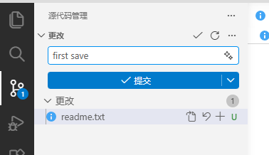
我们可以看到更改的内容，红框处的内容等价于我们
commit后面跟着的备注，提交可以等价于git add .+git commit，我们只需要点击一次就可以上传成功了，非常方便。
版本管理
查看修改与历史
查看修改
我们首先介绍一下git status这个指令，可以查看在你上次提交之后是否有对文件进行再次修改，我们在我们的learngit_1文件夹修改一下我们的readme.txt文件，且再新建一个文件test.txt，看看输出结果是怎么样的呢:
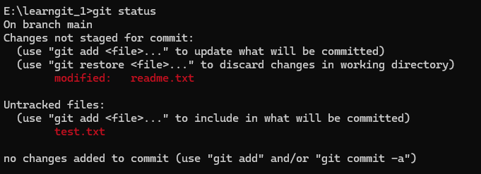
可以看出，如果我们还没有把我们的本地库内容放入暂存区(stage)，现在显示的是红色的文件，且它会显示我们是修改哪些文件。如果我们使用git add . 以后，再使用git status呢：
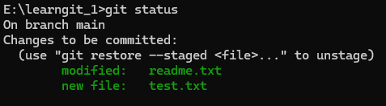
我们可以看出来，文件名变成绿色了，它会告诉你，哪些是修改的文件，哪些是新的文件。这时候，我们再使用git commit之后呢？我们再看看结果：
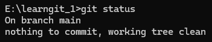
Git告诉我们当前没有需要提交的修改，而且，工作目录是干净（working tree clean）的。
上面的内容是通过命令行来观察的，我们要怎么使用VSCode来查看呢？非常简单，我们直接点击源代码管理后，如图框选的内容就是我们使用git status后能看到的信息，后面的点就是来解释这个文件是什么状态:
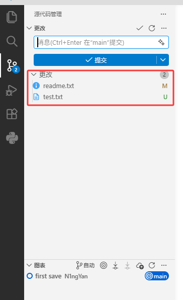
这个指令就介绍到这，非常的简单且基础。
比较差异
此处我们介绍指令git diff, 是 Git 中一个非常重要的命令，用来查看代码或文件的差异（difference）。简单来说，它告诉你：“哪些地方被修改了？修改前是什么？修改后是什么？”
我们先基于我们的learngit_1来简单介绍一下，如果我们同时修改了readme.txt与test.txt文件，使用git diff:
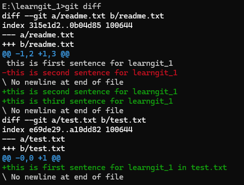
通过此处我们就可以很好的看清楚，我们文件的修改内容是什么了。如果我们add以后呢：
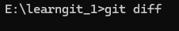
我们可以看到什么都没有了，我们一般来说，git diff 默认看还没git add的修改，git diff --staged 看已经 git add、准备 commit 的修改，git diff HEAD 看从上一次 commit到现在的全部修改。
在VSCode中，我们可以直接点击更改的文件，其可以自动查看差别：
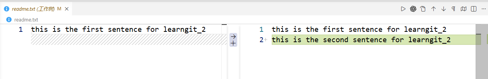
假如我们以及commit以后，我们使用git diff -staged就能看我们暂存区与我们版本库之间的差别了：
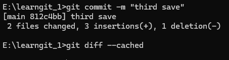
可以看出，完全没有差别，我们有一个结论：commit 后，暂存区会更新为新的 HEAD 状态，因此暂存区和最新提交保持一致，不再存在等待提交的修改。暂存区不会保留“未提交的变化”，但仍然保存当前提交对应的文件索引。所以我们才能得到这个指令输出结果:)
确实会很绕啊:(
查看历史
此部分我们介绍我们的指令git log，其是 Git 中最常用的命令之一，用于查看提交历史记录。它可以显示提交的详细信息，包括提交哈希值、作者、日期和提交信息。通过添加不同的参数，可以自定义输出格式、筛选条件等:
我们就可以看到我们三次commit的历史信息了：
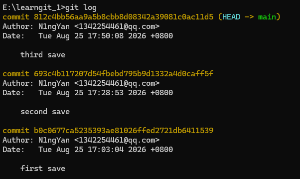
git log命令显示从最近到最远的提交日志，如果嫌输出信息太多，看得眼花缭乱的，可以试试加上–pretty=oneline参数：
在VSCode中，我们可以查看此部分内容：
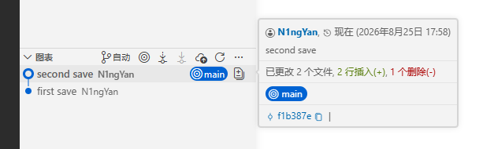
其可以显示我们现在分支指的方向，以及所有我们在git log中可以获得的信息。
恢复，撤销与回退
在前面的学习中，我们已经知道 Git 可以帮助我们保存项目的多个版本。但是在实际开发过程中，我们经常会遇到一些问题：
- 刚修改的代码发现写错了，想恢复之前的内容；
- 已经 git add 的文件，不想提交了；
- 已经 commit 的版本出现问题，想回到之前的版本；
- 删除的文件想找回来；
- 想查看某个历史版本的代码内容。
这些操作都属于 Git 中非常重要的一部分。不同阶段的问题，需要使用不同的命令解决。
你本地修改了一个文件，但是发现改错了： 例如，你原本的内容是
Hello Git,现在改成了Hello World,但是在add之前，你突然觉得还是原来版本更好，但是现在以及改了，这时候你希望放弃当前修改，恢复到上一次 commit 的状态可以使用
git restore, 其修复的是工作区文件。也就是说，它只能恢复没有提交的修改。我们使用我们的
learngit_1中的readme.txt文件，我们修改且保存如下：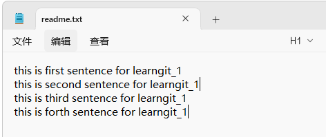
但是我们这个时候后悔了，其中的
this is forth sentence for learngit_1是新增的内容，我们现在其实很方便的就可以回溯，但是只是做一个简单的案例，此时我们可以使用git diff看到我们的差别，然后直接使用git restore，结果如下图：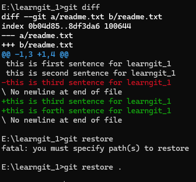
可以看出来
git restore与git add后面的含义一致，我们直接使用git restore .即可。我们现在回learngit_1中的readme.txt文件：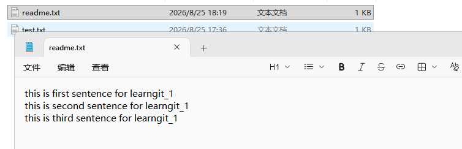
我们可以看到，神奇的恢复了！
在VSCode中即更简单，我们可以直接放弃文件的更改即可，按钮如图：
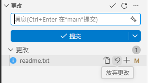
如果修改了文件且
add了，突然发现不应该提交这个文件，怎么办？这时候不能使用
git restore <file>因为他会直接恢复文件内容，这样我们修改后的内容也不见了，正确的应该是git restore --staged <file>，这个操作非常安全。删除后的文件的恢复
例如我们的文件夹
learngit_1，我们删除其中的文件test.txt，可以使用git status查看其状态: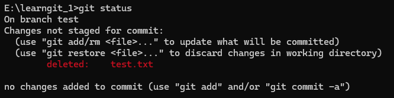
可以看到，该文件已经被删除了，我们分以下两种情况：
一.还没有提交
commit，我们可以使用git restore <file>: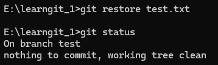
即从上次
commit中恢复文件。二.我们已经提交了删除，即已经
commit了，此时我们可以查看历史log，假设我们想恢复的文件在版本commit-1，其哈希值为abc123…,我们可以使用git checkout abc123 -- <file>或者git restore --source abc123 <file>来恢复文件查看某个历史版本的代码
我们可以使用
log查看commit对应的哈希值以后，使用git show commit-id，Git会显示修改时间，作者，以及内容等。如: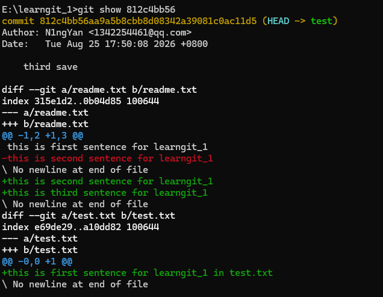
版本回退
我们现在想要的是将项目直接回到过去，可能我们现在的项目历史是:A->B->C->D,我们发布D以后发现，D出现了很大的错误，需要重新回到C，这就是版本回退。
我们一般可以使用
git reset --hard commit_id来进行版本回退。其中有三种模式：soft:其只移动
HEAD，但是保留了工作区和暂存区，适合重新整理commit，他不会影响我们现在本地的内容。mixed(默认):移动
HEAD并清空暂存区，但是保留了文件修改的内容。hard:将
HEAD，暂存区与工作区全部恢复为想要的版本，效果最彻底。
当然，Git必须知道当前版本是哪个版本，在Git中，用
HEAD表示当前版本，也就是最新的提交，上一个版本就是HEAD^，上上一个版本就是HEAD^^，当然往上100个版本写100个^比较容易数不过来，所以写成HEAD~100。如果我们以及回到了以前的版本，再使用
git log，就看不到此commit后的信息了，好比你从21世纪坐时光穿梭机来到了19世纪，想再回去已经回不去了，怎么办呢？办法还是有的，我们只要找到我们想要回去的那个
commit的commit_id即可，如果找不到了，可以试试git reflog，这个是查看命令历史的指令。实际上，版本回退的本质是指针
HEAD指的对象变换了一下而已：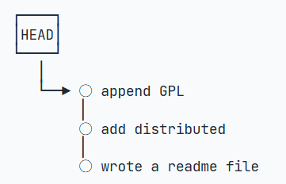
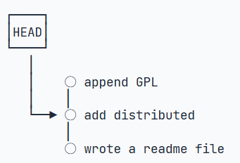
撤销修改
假如你在
readme.txt中修改了一些内容，但是在准备add之前发现了有明显的错误，这时候我们可以丢弃了工作区的修改内容，即使用git checkout -- <file>命令git checkout – readme.txt意思就是，把readme.txt文件在工作区的修改全部撤销，这里有两种情况：
一种是
readme.txt自修改后还没有被放到暂存区，现在，撤销修改就回到和版本库一模一样的状态；一种是
readme.txt已经添加到暂存区后，又作了修改，现在，撤销修改就回到添加到暂存区后的状态。总之，就是让这个文件回到最近一次
git commit或git add时的状态。但是如果以及
git add到暂存区了，但是还没有commit，这时候我们可以使用git reset HEAD <file>来把暂存区的修改撤销掉（unstage），重新放回工作区.当我们用HEAD时，表示最新的版本。总结如下：
场景1：当你改乱了工作区某个文件的内容，想直接丢弃工作区的修改时，用命令
git checkout -- file。场景2：当你不但改乱了工作区某个文件的内容，还添加到了暂存区时，想丢弃修改，分两步，第一步用命令
git reset HEAD <file>(默认为mixed模式)，就回到了场景1，第二步按场景1操作。场景3：已经提交了不合适的修改到版本库时，想要撤销本次提交，参考版本回退一节，不过前提是没有推送到远程库。
删除文件
如果你使用
del删除了某文件，这个时候，Git知道你删除了文件，因此，工作区和版本库就不一致了，git status命令会立刻告诉你哪些文件被删除了： ```bash $ git status On branch master Changes not staged for commit: (use “git add/rm…” to update what will be committed) (use “git checkout – …” to discard changes in working directory) deleted: test.txtno changes added to commit (use “git add” and/or “git commit -a”)
现在你有两个选择，一是确实要从版本库中删除该文件，那就用命令`git rm`删掉，并且`git commit`：bash $ git rm test.txt rm ‘test.txt’$ git commit -m “remove test.txt” [master d46f35e] remove test.txt 1 file changed, 1 deletion(-) delete mode 100644 test.txt ``
现在，文件就从版本库中被删除了。(tips:先手动删除文件，然后使用git rm和git add`效果是一样的。) 另一种情况是删错了，因为版本库里还有呢，所以可以很轻松地把误删的文件恢复到最新版本
git checkout -- test.txt。git checkout其实是用版本库里的版本替换工作区的版本，无论工作区是修改还是删除，都可以“一键还原”。
分支管理
分支(Branch)
在前面的学习中，我们已经掌握了 Git 最基础的功能：创建版本（commit）,查看历史（log）,恢复和回退版本
但是，到目前为止，我们的项目一直沿着一条路线向前发展.这样的设置导致每一次修改都会直接影响当前项目。
这种方式在个人练习项目中没有太大问题，但是在真实的软件开发中，经常会遇到这样的情况，正在开发一个网站，目前版本已经可以正常运行。
这时候，你想增加一个新的功能。如果直接在当前版本上修改，可能会出现新功能开发失败；原来的正常代码被破坏；想回到之前版本比较麻烦。
有没有一种方法，可以在不影响当前项目的情况下，尝试新的开发方向？这就是 Git 的 Branch（分支）。
在Git中，一个项目常常有一个默认的主要分支，以前默认是master,但是我们现在大多数项目都改为main,这也是为什么我们前面要改设置的原因，总得追逐大流:)
main常常代表的是正式版本的文件，其是稳定的，可以发布的。
廖雪峰的教程中：
每次提交，Git都把它们串成一条时间线，这条时间线就是一个分支。截止到目前，只有一条时间线，在Git里，这个分支叫主分支，即master分支。HEAD严格来说不是指向提交，而是指向master，master才是指向提交的，所以，HEAD指向的就是当前分支。
一开始的时候，master分支是一条线，Git用master指向最新的提交，再用HEAD指向master，就能确定当前分支，以及当前分支的提交点:
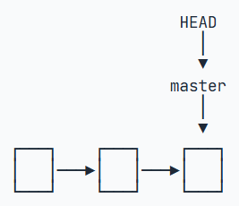
每次提交，master分支都会向前移动一步，这样，随着你不断提交，master分支的线也越来越长。
当我们创建新的分支，例如dev时，Git新建了一个指针叫dev，指向master相同的提交，再把HEAD指向dev，就表示当前分支在dev上:
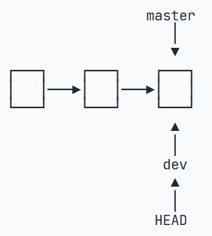
Git创建一个分支很快，因为除了增加一个dev指针，改改HEAD的指向，工作区的文件都没有任何变化！
不过，从现在开始，对工作区的修改和提交就是针对dev分支了，比如新提交一次后，dev指针往前移动一步，而master指针不变：
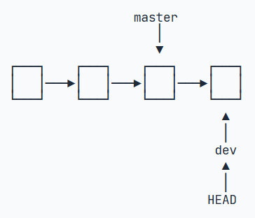
至于合并部分我们后面再讲。
我们要如何查看我们现在有哪些branch呢？可以使用git branch来查看：
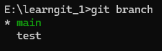
其中的*表示当前所在分支。图中表明我们现在正在main分支。
如何创建新的分支呢？可以使用git branch 分支名，即可，我们因为已经创立了test分支，就不做演示了。
假设我们的main分支原本有A->B->C的历史，那么此时test也拥有相同的历史。但是注意,这时候并不会主动切换到我们新建的分支,还需要以下指令git switch 分支名,例如:
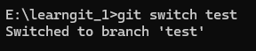
这样切换到test分支,之后修改代码,就不会影响到我们的main分支了.这就是分支隔离。
在实际开发中,我们更常用git switch -c 分支名这一串指令,其代表了创建与转化分支这两个功能.
值得一提的是,我们前面说的git checkout -- <file>这个指令,如果没有了--,且后面跟着的是分支名,其也能起到转化分支的功能,即switch,要创建与转化同时进行的,即git checkout -b 分支名即可.
在这我们推荐使用switch指令,防止我们忘记了checkout的撤销修改的功能
我们来试试,如果我们在test分支上修改,会对我们的main分支有什么影响吗?如下图我们对我们的readme.txt文件做了一定的修改。
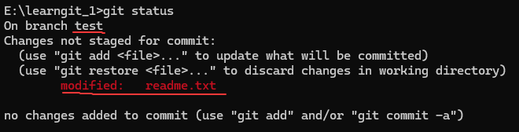
此时我们add+commit，再切换回我们的main分支，发现，前面修改的内容都没了！
因为那个提交是在test分支上，而main分支此刻的提交点并没有变：
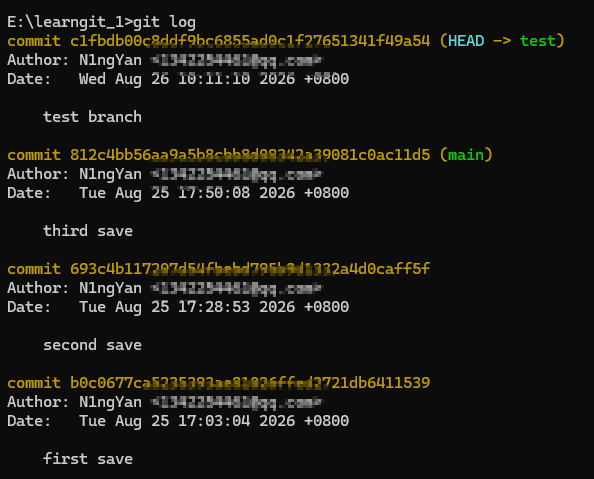
注意,我们这时候可以观察到,切换分支的时候,我们本地库的内容也会跟着变,即切换分支不仅改变 HEAD 指向，还会把该分支对应的 commit 内容检出（checkout）到工作区。
因为切分支需要修改工作区内容。如果你的工作区里已经有自己没提交的修改，而目标分支又需要改这些文件，Git 就可能覆盖你的修改。因此 Git 会阻止切换，并提示类似：
Your local changes would be overwritten by checkout以上是我们对分支的一些初步理解与使用,下面我们开始讲如何把分支合并到main中,增加我们的新功能.
分支合并与冲突
在上一部分中，我们已经知道了 Branch 的作用：在不影响主分支的情况下，创建一条新的开发路线。
当功能开发完成并测试没有问题之后，我们通常希望把这些修改重新放回 main 分支。这个过程就叫做分支合并(merge)
简单来说，Branch 负责把不同工作分开，Merge 负责把已经完成的工作重新组合到一起。
我们来简单的介绍一下merge是什么
假设目前项目的状态如下:
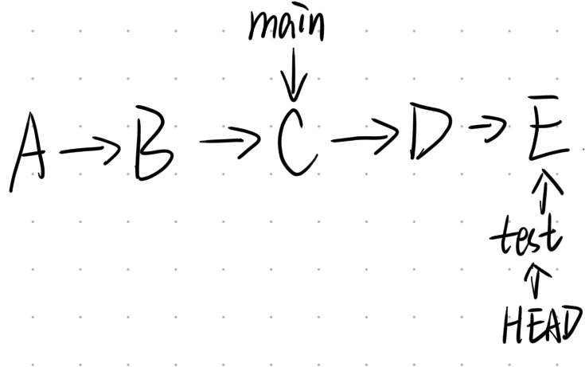
我们可以看出,main分支停留在了C,而test分支已经完成了D和E两次提交.如果此时我们想要开发的功能已经完成了,我们就希望让main也包含这些修改.
我们首先要切换到要接受修改的分支,git switch main,然后执行git merge test即可:
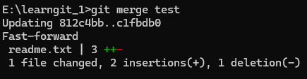
如图中显示一般,我们是Fast-forward的合并方式,Git告诉我们，这次合并是“快进模式”，也就是直接把main指向test的当前提交，所以合并速度非常快。
即因为创建test之后,main没有再继续产生任何新的提交,Git会发现,我们只要把我们的指针从C前移到E即可,这种合并叫做快进合并.它没有真正创建一个额外的“合并提交”，而只是让 main 指向了新的位置。
但是,如果我们创建了test之后,main分支也进行了其他的修改呢?例如你在搞A功能,同事在搞B功能,他比你先搞好了,然后修改了main,这时候我们要怎么办?
我们同样画一个简单的历史图:
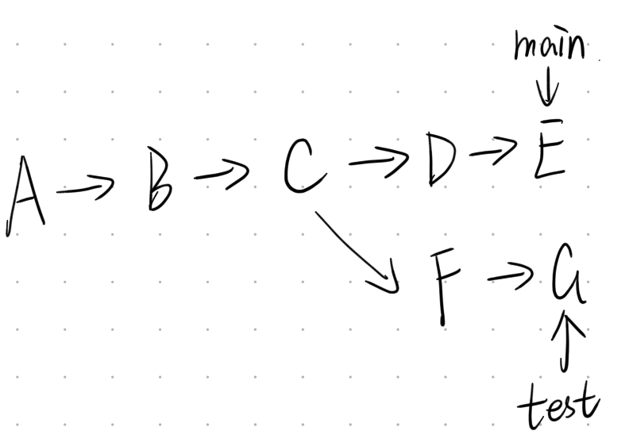
这时候两个分支已经真正产生了不同的历史.如果现在切换到git switch main,然后再git merge test.Git 会尝试把两边的修改组合起来.如果两个分支修改的是不同内容，Git 通常可以自动完成。最终产生一个新的版本,像一个环一样.
这边我们先理解一下,merge到底在合并什么?
实际上,Git并不是把两个文件夹合并到一起,而比较的是两个分支从共同祖先开始分别发生了哪些变化。以我们的历史图,main与test分支的共同祖先是C,Git会比较,从C->E发生了什么变化,从C->G又发生了什么变化,然后尝试把两边的修改组合起来。如果两边修改的是不同文件，通常非常简单。我们只需要把不同文件都改成修改后的版本即可:)
Git 很容易判断这些修改互不干扰，因此可以自动合并。即使修改的是同一个文件，只要修改的是不同位置，Git 很多时候也可以自动处理。
真正麻烦的是,两个分支修改了同一个文件中的同一部分内容,这时候就可能产生 Merge Conflict(合并冲突)。
它出现的原因非常简单：Git 无法判断两份修改到底应该保留哪一个。
我们这边举一个很简单的例子,假如C处,我们原本的readme.txt中最后一行是eat apple,经过更新,我们在main分支的E处修改这行为eat red apple,但是在test的G处,修改为eat green apple,现在两个分支都修改了同一行。
如果这时候执行git merge test,Git 就会遇到一个问题,我要选择E处的修改呢,还是G处的修改呢?Git 不知道。因此它不会擅自帮你决定，而是暂停合并，把决定权交给开发者.
我们下面来亲手制造一个Merge conflict,看看会发生什么
我们对我们的learngit_1文件夹中的readme.txt做以下修改，对于main分支，其最后一行修改为this is test for merge conflict；而test分支，其最后一行修改为this is test 4 merge conflict. 我们将test分支合并到main分支试试：
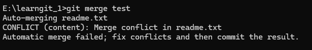
可以看到Git 自动合并失败了，需要你手动解决冲突
此时我们可以使用git status查看有哪些文件存在冲突，我们这样才有目标：
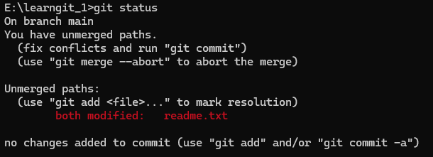
可以看到，Git说readme.txt都修改了，并且 Git 无法自动决定结果，这时候我们打开readme.txt文件看看。
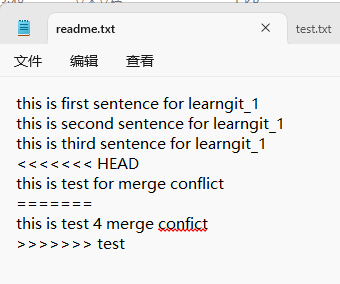
这几行就是 Git 自动插入的冲突标记。
Git 的冲突内容通常由两个部分组成：
<<<<<<< HEAD 与 ======= 之间的部分：这段内容是现在这分支中存在的冲突内容。
======= 与 >>>>>>> 分支名 之间的部分：这段内容是将要合并进来的分支中存在的冲突内容。
Git 实际上是在问你，这两个版本我都找到了，你决定最终应该长什么样
此时我们只能手动解决冲突，我们自己选择保留哪一种内容，可以是main分支，也可以是test分支，甚至可以是你自己重新写的内容，解决冲突并不是“选择左边还是右边”，而是确定这个文件最终应该是什么样子。
例如我们决定保留main分支下的内容，那么把冲突标记和另一边内容全部删除，最终文件中冲突部分只留下this is test for merge conflict即可。
后面直接使用git add加git commit即可。这样整个 merge 才真正完成。
值得注意的是，此部分同样可以使用VSCode，此处就不做介绍了，非常简单，自己尝试一下，一试就会:)
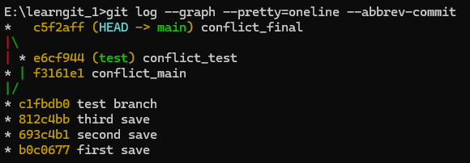
如图，我们就可以看到我们的全过程图
一般来说，现在test分支就已经没用了，我们可以直接删除即可，这也是一般的工作流程，指令是git branch -d 分支名,-D表示为强硬删除
如果你在看到存在大量的merge后不想要继续merge怎么办，可以使用git merge --abort
如果想要学习更多的分支内容，请前往廖雪峰的分支管理教程
Github
远程仓库：Remote、SSH、Push 与 Pull
到目前为止，我们学习的 Git 操作基本都发生在自己的电脑上。无论是 commit、版本回退，还是创建和合并分支，本质上都只是在操作本地的 Git 仓库。
但是我们最开始介绍 GitHub 的时候提到过，GitHub 可以理解为 Git 仓库的“云端”。如果我们希望把自己的项目保存到 GitHub，或者和其他人共同开发项目，就需要让本地 Git 仓库与 GitHub 上的远程仓库建立联系。
这个过程其实可以简单的理解为：本地Git仓库push到Github远程仓库，而我们可以从Github远程仓库pull到本地的Git仓库。
其中，本地仓库和 GitHub 仓库之间的关系由 remote 管理；SSH 用来证明“你是谁”；push 负责把本地提交上传到远程仓库；pull 则负责把远程仓库中的新内容同步回来。
Git 中把 GitHub 上这样的仓库称为远程仓库（Remote Repository）。
需要注意，远程仓库并不一定非要位于 GitHub。GitHub 只是目前非常常见的 Git 托管平台，其他 Git 服务器同样可以作为 Remote。
不过本文使用 GitHub，所以后面提到远程仓库时，我们基本都指 GitHub 上的仓库。
在 GitHub 创建一个远程仓库
首先，登录我们的Github账户，点击右上角的+,选择创建一个新的Repository：
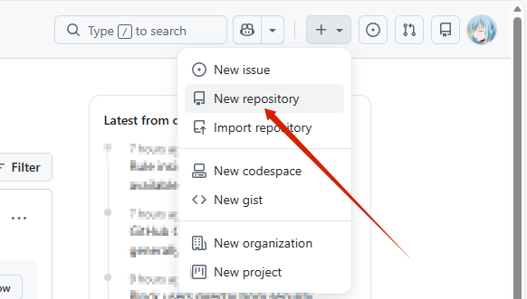
Repository名称可以随意填写，只要你觉得可以帮助你认清是哪个仓库即可，仓库还可以选择Pubulic或者Private，Public 表示其他人可以看到这个仓库，Private 则表示只有你自己以及被授权的用户可以访问。
因为我们本地已经存在 learngit_1 仓库，所以这里建议暂时不要勾选自动创建 README、.gitignore 或 License，直接创建一个空仓库即可。这样可以避免本地仓库和 GitHub 仓库一开始就拥有不同的提交历史。
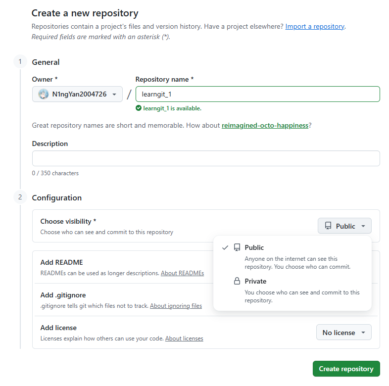
一般可以看到两种常见形式HTTPS和SSH。
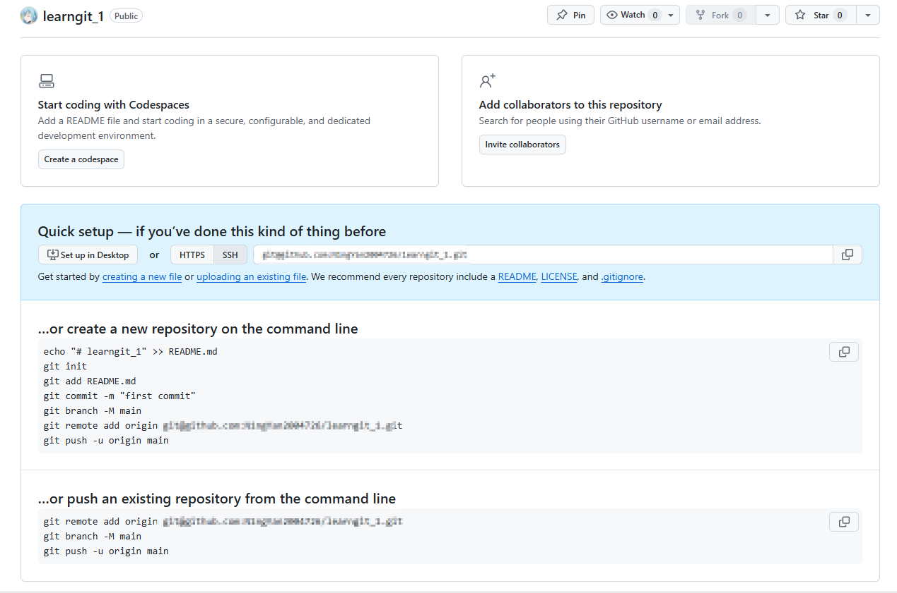
两种方式都可以连接 GitHub。本文主要使用 SSH，因此在真正连接远程仓库之前，我们先把 SSH 配置好。该图中下方的两块代码分别代表着，已经有本地库与还没有本地库的情况，我们选择下者，配置好SSH后直接输入对应代码即可。
SSH：让 GitHub 知道“你是谁”
假设你在自己的电脑上执行git push,告诉 GitHub，我要上传这个仓库，GitHub 怎么知道操作电脑的人真的是你？
GitHub 需要一种更加可靠的身份验证方式，这里我们使用的就是 SSH Key。
SSH Key 可以简单理解成一对互相对应的钥匙：你的电脑中存在私钥，而我们提供给Github公钥。当电脑尝试连接 GitHub 时，GitHub 可以通过这套机制确认：这个连接确实来自拥有对应私钥的用户
我们可以在我们的主文件夹看看是否存在.ssh文件夹，里面应该有两个文件id_rsa和id_rsa.pub两个文件,对应着私钥与公钥两种。如果没有的话，可以使用以下指令生成一个ssh-keygen -t rsa -C "youremail@example.com"
你需要把邮件地址换成你自己的邮件地址，然后一路回车，使用默认值即可，由于这个Key也不是用于军事目的，所以也无需设置密码。记住，生成出来的私钥不能泄露出去，而公钥可以放心地告诉别人。我们上传给Github的也是公钥。
我们可以使用VSCode等方法查看公钥的内容，然后直接复制完整内容。我们进入Settings，然后点击左侧栏Access中的SSH and GPG keys:
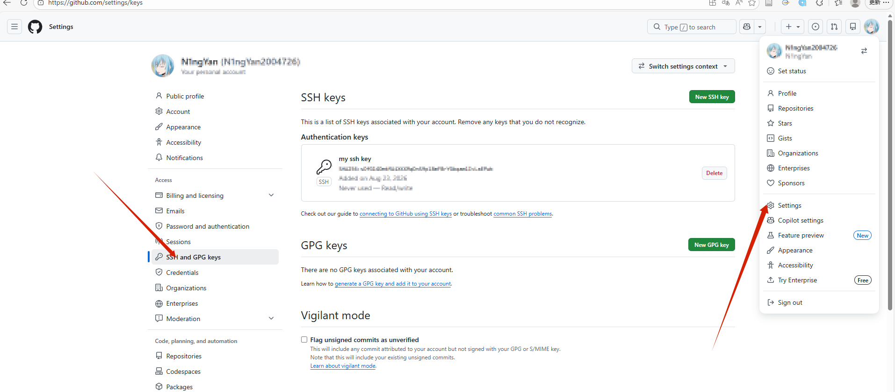
点击SHH keys块的右上角New SSH key, 然后输入一个你能认得的title与你的公钥即可。
我们可以使用以下指令来查看自己是否成功，如果第一条指令不行就换成下面那条，记得输入yes：
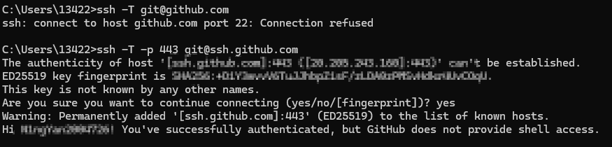
如果出现了这种情况，请你在.ssh文件夹创建一个config，不然后面会有问题哦
具体策略如下：从上到下输入：
$ cd .ssh #(进入该文件夹)
$ echo Host github.com>config
$ echo HostName ssh.github.com>>config
$ echo User git>>config
$ echo Port 443>>config然后检查一下内容：
$ type config
Host github.com
HostName ssh.github.com
User git
Port 443然后再检查一下文件名称：
$ dir你应该能看到一个config而不是一个文件夹，千万不要变成文件夹啊😫
需要注意的是，SSH 测试成功并不代表你真的“登录进了 GitHub 的服务器终端”。GitHub 只是通过 SSH 确认了你的身份，并不会给你提供普通的 Shell。
到这里，我们的电脑已经具备了通过 SSH 与 GitHub 通信的能力。
将本地仓库与远程仓库连接起来
SSH 配置完成以后，我们回到之前的 learngit_1。然后使用git remote add origin git@github.com:用户名/learngit_1.git:
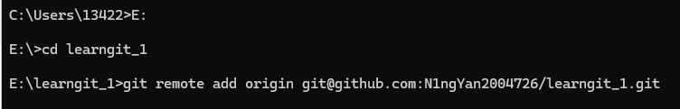
我们先介绍一下这串指令的含义： 1. git remote 表示管理远程仓库。 2. add表示增加一个远程仓库。 3. origin 是我们给这个远程仓库起的名字 4. git@github.com:example/learngit_1.git 才是真正的远程仓库地址。 > 所以整句话可以理解成:给当前 Git 仓库添加一个名叫 origin 的远程仓库，它的地址是后面的 GitHub 地址。
至于为什么给远程仓库起origin这个名字，是大家都习惯了，你起成github也是可以的
我们可以使用git remote来查看我们的远程仓库，如果希望看到详细地址，可以使用git remote -v：
fetch表示从这个地址获取内容。 push表示向这个地址上传内容。
现在本地仓库和 GitHub 已经建立联系，但是 GitHub 仓库目前还是空的。这时候就需要push，可以把其简单理解为把本地仓库中的提交推送到远程仓库。
第一次上传的时候，可以可以执行git push -u origin main 表示为上传到哪个远程仓库，上传哪个分支的内容。所以这句话就是：把本地的 main 分支推送到 origin 这个远程仓库。其中的-u的作用是以后 Git 就知道本地 main 默认应该推送到哪个远程分支。以后我们只需要git push即可。
我们这时候刷新一下我们的Github的仓库页面：
这就代表我们已经成功啦.
我们以后想把我们的工作更新到远程仓库，其整个流程为:
修改文件->git add->暂存区->git commit->本地Git仓库->git push->GitHub远程仓库
我们前面学习过分支，那要如何把我们的分支也上传过去呢？我们同样可以执行git push -u origin test之后 GitHub 上就会出现对应的远程分支。 这样以后git push就会同时更新这两个分支的信息。
Pull：把 GitHub 的修改同步到本地
我们前面讲的是把本地的内容上传到远程仓库，肯定也要有操作可以把远程仓库的内容放到我们的本地来，这个操作就是git pull，例如有时候你的同伴已经在远程仓库完成了一次更新，你要再工作肯定是要继续新的仓库，旧的仓库就没用了。
这样就会引出了前面说的冲突问题，如果已经有人在远端更新了仓库，你这时候使用git push，Git通常会拒绝，原因很简单：远程已经有了你本地不知道的新内容。
如果 Git 允许你直接 Push，就可能覆盖其他人的工作。这时候我们通常需要先git pull，把远程变化同步下来，Git 会尝试把两边的修改进行合并。如果双方修改了同一部分内容，就可能出现上一章讲过的Merge Conflict，我们的解决方案与那部分一模一样，我们最后解决完成后git push即可。
pull是在做什么呢？
实际上，它包含了两个操作，即git fetch+git merge，前者负责把远程仓库的最新信息获取回来，但不会直接修改你当前正在工作的分支。然后 Git 再把获取到的远程变化合并到当前分支。
假如你正在修改readme.txt，但是还有没有commit，这时候进行pull，如果远程仓库恰好也修改了相关文件，就可能让情况变得比较复杂，所以我们在pull之前，最好先git status，确认一下自己的工作区状态，如果已经完成的差不多了，可以先add+commit
有时候我们想要修改我们的地址，如把SSH变成HTTPS：可以使用git remote set-url origin 新地址，但是如果要删除这个远程库链接，可以使用git remote remove origin
基于VSCode的push与pull
前面的内容我们同样可以使用我们的VSCode，这边我们做简单的介绍：
首先，我们要把本地库链接到Gitub，可以使用下图的按钮，直接使用即可，上侧输入的内容为你给远程仓库的命名，例如我们这边是origin:
以及我们的push,pull,fetch操作：
VSCode 并没有使用另一套版本控制系统，只是把这些 Git 操作变成了按钮。如果你的VSCode是英文的，应该可以更好的帮助你理解。
Clone：从远程仓库获取一个完整项目
上一部分我们已经学会了如何把本地 Git 仓库连接到 GitHub，并使用push 和 pull 在本地仓库与远程仓库之间同步提交。但是前面的操作有一个前提：本地电脑中已经存在这个 Git 项目。
如果现在换了一台电脑，或者你想参与别人的 GitHub 项目，本地连项目文件夹都没有，这时候就不能直接使用 git pull，因为本地还没有对应的 Git 仓库。这种情况下，就需要使用：git clone
clone 的作用可以简单理解成：把一个远程 Git 仓库完整地复制到本地.这里的“完整”不仅包括项目文件，还包括这个仓库的 Git 历史、分支信息以及远程仓库配置。
假如Github上已经有一个仓库：git@github.com:example/learngit_1.git
我们希望把它下载到本地，只需要在准备存放项目的位置执行：git clone git@github.com:example/learngit_1.git
我们可以直接在github中点击右上角的Code按钮，就可以获得地址了。
Git 会自动创建：learngit_1/ ，并把远程仓库中的内容下载进去。我们可以进入这个项目，然后使用git status来查看其内容。此时你已经拥有了一个可以正常使用的本地 Git 仓库。
我们可以尝试下载以下图中的仓库，这是一个Skill，感觉看上去不错：
我们可以看到，我们获得了全部的信息，这非常完美，且我们以后也可以通过pull等方法进行更新啦。
我们上面Code按钮中看到可以下载Zip，有的人会说，这不也是下载了整个文件夹吗，有什么区别？
如果我们下载Zip，你得到的只是当前版本的文件，其中是没有.git的，因此也没有这个项目的完整 Git 历史。
而使用git clone 获得的是项目文件+.git+Commit历史+分支信息+远程仓库配置。
对的，我们clone以后，Remote 已经自动配置好了:
如果你拥有这个仓库的 Push 权限，也可以直接git push上传自己的提交。
所以如果我们对于一个有权限的Github项目，如果换了一台新电脑，整个工作流程就是：
从Github中clone下来项目， 然后在本地项目进行修改， 使用git add .+git commit ，最后使用git push把新的内容推到Github中去。
如果希望 Clone 之后直接进入某个指定分支，可以使用:git clone -b 分支名 仓库地址
.gitignore：告诉 Git 哪些文件不要管理
学习到这里还有一个非常实际的问题。Git 默认会看到项目目录中的大多数文件。
但是实际开发中，并不是所有文件都应该提交到 Git 仓库。我们本地的仓库中可能有一些私密的信息，不应该随意的上传到Github中去，这时候就需要.gitignore
.gitignore 是一个普通文本文件。它的作用是告诉 Git 哪些文件或文件夹应该被忽略. 我们可以在里面输入例如node_modules/等内容，这些就代表了要忽略上传的文件。
基本写法：
- 如果想忽略一个文件：test.txt 那么test.txt不会被 Git 跟踪
- 如果想忽略一个文件夹：node_modules/ 那么整个：node_modules文件夹都会被忽略。
- 如果想忽略某一类文件：*.log 表示忽略所有：.log文件。例如debug.log或者error.log等。
我们在这里举一个例子，假如我们写为：
node_modules/
.env
*.log
temp/表示为忽略整个node_modules与temp文件夹，.env表示忽略环境配置文件，*.log表示忽略所有日志文件。
补充： 如果想要某一类中的某一个文件是可上传的，可以使用：
*.log
!important.log这种写法。
在这我们着重讲一个文件夹node_modules，这个文件夹往往是不会上传的，里面可能包含成千上万个依赖文件，而且体积很大。但是这些依赖通常已经记录在：package.json和package-lock.json中，clone之后，我们可以使用npm install生成自己的node_modules,因此没有必要把整个目录上传到 Git。类似的思想也适用于其他语言自动生成的文件。
.gitignore 主要作用于“还没有被 Git 跟踪”的文件。如果你已经使用add和commit进行跟踪了，已经进入版本控制的文件，不会因为后来加入 .gitignore 就自动停止跟踪。
如果我们要取消追踪可以：
现在.gitignore加入该文件，例如config.txt，然后执行git rm --cached config.txt，之后提交git commit -m "stop tracking config.txt"再git push即可。
如果是文件夹的话，可以使用git rm -r --cached node_modules，即加入-r，其含义是递归处理整个目录。之后git commit -m "remove node_modules from git"即可。
git check-ignore -v 文件名可以告诉你是哪一条 .gitignore 规则忽略了它
使用 VS Code Clone GitHub 项目
如图所示，我们可以直接获取即可，VSCode 会帮助我们执行 Clone，并询问是否打开这个项目。
团队协作
在真实的开发中，一个项目往往不会只有一个人来开发，我们可能有多个作者来分别负责一些功能，如果所有人都直接修改main分支，那么很容易出现问题，因此多人开发的时候，我们一般不会直接让所有人都直接修改main,而是开发自己的功能在分支后且push上去，这时候需要pull request，需要别人检查一下才会选择是否合并。
我们下面会详细的讲述一下多人开发的流程
假设我们在Github上有一个团队项目project，Alice 和 Bob 都拥有这个仓库的开发权限。
第一次参与项目时，他们都先会git clone git@github.com:example/project.git 从而得到了自己的本地仓库。这时候虽然大家操作的是同一个 GitHub Repository，但每个人实际上都有自己独立的本地 Git 仓库。
第一步：开始开发之前先同步 main
假设 Alice 准备开发登录功能。首先先应该进入main分支，然后同步Github中的最新内容：git pull,这一步是为了防止其本地库的main可能已经落后了。如果她一开始就是基于旧代码开发，后面更容易产生冲突。
因此一个比较好的习惯就是：
git swtich main
git pull先让自己的 main保持最新，再开始新的工作。
第二步：创建自己的功能分支
同步完成之后，不直接修改 main。而应该创建新的分支，如git switch -c feature-login,之后Alice 就在：feature-login中开发登录功能。这里的分支名通常会尽量描述自己的任务。如果是修复 Bug，也可能写成：fix-login-error等等，原则就是看名字就应该大概知道这个分支在做什么。
第三步：正常开发并 Commit
接下来和之前学习的 Git 操作完全一样。Alice 修改代码：login.html, login.js,然后我们可以查看状态git status，确定修改git diff,然后使用git add .+git commit -m "add login page"继续开发后，还可以继续add与commit。
于是我们的历史可能会变成：
这里的 D 和 E 都只存在于 Alice 的本地 feature-login 分支中。
第四步：把自己的 Branch Push 到 GitHub
现在登录功能开发完成。但是 GitHub 还不知道：feature-login这个分支。因此第一次Push的时候，可以git push -u origin feature-login，执行后这样 GitHub 上就出现了 Alice 的功能分支。后面也可以直接git push即可。
这里会产生一个问题，为什么不直接 Merge 到 main？即直接使用:
git switch main
git merge feature-login
git push如果这是你自己的个人项目，这么做完全没有问题。但是多人协作中，我们通常希望：在代码真正进入 main 之前，让其他成员检查一下修改。这个请求就是Pull Request通常简称PR.
创建Pull Request
当我们执行了git push -u origin feature-login之后，进入Github Repository 页面，其往往会自动提示Compare & pull request，点击进去就可以创建PR。
当然也可以进入Pull requests页面，然后New pull request。
接下来需要选择两个分支。[base: main & compare: feature-login]
这里的base表示为修改最终要进入哪个分支。而compare表示哪个分支提供新的修改。
Title 应该简单说明这次修改完成了什么。而 Description 可以说明具体的工作内容。Pull Request 的目的不是写很多文字，而是让负责 Review 的成员能够快速知道：“这次修改是干什么的？”
我们可以在github上直接看到如图所示内容，即改变了什么：
如果经过你的检查，我们可以通过此次更改了：
如果你觉得没通过，可以给他一些意见，让他重新修改一下。
Alice 不需要重新创建 Pull Request。她只需要回到自己的：feature-login，继续修改，然后重新add、commit、push即可。新的 commit 会自动出现在原来的 Pull Request 中。故Pull Request 是跟着分支走的，而不是只对应一次 commit。
我们在push之前，可能存在一个问题，就是多人开发时，很可能在 Alice 开发登录功能期间，main 已经继续发生变化。例如在他开发期间，bob的功能已经进入了main，且推进了两个版本了，这时候我们本地的main版本太低了。
如果双方修改的内容互不影响，GitHub 可能仍然可以直接合并。但是如果双方修改了同一个文件的同一部分，就可能出现：Merge ConflictGitHub 会提示这个 Pull Request 不能直接合并。这时候就需要先解决冲突。
我们先简单尝试一下，这时候我们在我们的本地中创建第二个分支test_2即可，我们看看我们修改相同部分以后会出现什么输出呢？
我们可以看到，已经出错了。
我们有一种比较简单的方法：
先切回git switch main；获取最新的mian:git pull；然后回到自己的分支：git switch test_2;新的 main 合并进来：git merge main,现在如果有冲突，就按照前面 Merge Conflict 一章的方法解决。修改成最终想要的结果,然后add, commit, push 即可。
这时候我们就可以成功PR了
如图，我们可以我们已经成功修改了，且存在了三个branch，如果不想要的分支，merge完可以直接删除啦。
如果没有仓库写权限怎么办？Fork
针对于我们没有操作权限的仓库，应该怎么办呢？ 这时候就需要Fork
Fork 可以简单理解成：在自己的 GitHub 账号中复制一份别人的仓库。
之后，你的Github中就会出现对应的仓库了，这两个仓库是独立的，现在你可以自由的push到你自己的仓库中去。
Fork的一个基本流程：
例如你希望给一个开源项目修复 Bug。
首先，先把别人的仓库fork到我们自己仓库。然后 Clone 自己的 Fork，修改后在 GitHub 上创建 Pull Request。然后项目维护者就可以检查你的代码。如果他们认为修改没有问题，就可以把你的 PR Merge 到原项目。这就是很多开源项目接受外部贡献的方式。
如果还是没懂的话，可以前往 傻子也能做开源这个视频看看详细教程
Tag与Release ：给重要版本一个名字
我们前面的学习可以知道，每执行一次commit，Git就会保存一个新的版本，随着项目不断开发，提交历史可能会越来越长。
如果现在我们想找到某个重要版本，例如：“第一个正式发布的版本”，我们前面说可以通过git log找到它对应的 commit hash。但是这种方式并不直观。我们可能更希望直接把它称为：v1.0.0这就是 Git 中 Tag（标签） 的作用
Tag 就是给某个重要 commit 起一个固定而且容易理解的名字。
前面的commit是一些普通存档，tag就是在普通存档中再选择一些重要存档。
可以使用git tag查看当前仓库已经存在的tag，如果已经存在了一定规则，我们可以查找git tag -l "v1.*"这样就可以查看所有v1.x的标签了。
我们要如何创建tag呢？ 我们可以对我们现在的commit版本，直接使用git tag v1.0.0他就会认为我们现在的版本是v1.0.0
如果要给过去的版本创建tag，我们只需要知道其commit-id即可，我们使用git tag v1.0.0 commit-id即可
常见的tag分为两种：Lightweight Tag & Annotated Tag
我们前面使用的就是Lightweight Tag，它本质上是一个指向某个 commit 的名字。如果希望tag本身还包括创建者；创建时间；说明信息。
其指令为git tag -a v1.0.0 -m "Release version 1.0.0"
在正式项目中，如果 Tag 是用于软件发布，通常更推荐使用 Annotated Tag，因为它能够保存更多关于这个版本的信息。
如果你希望查看V1.0.0, 可以使用git show v1.0.0
且我们要清楚一点，tag不会自动上传到Github，因此我们需要单独 Push Tag，例如git push origin v1.0.0意思是把本地的 v1.0.0 Tag 上传到 origin远程仓库。 且可以一次push多个tag，即git push origin --tags
如果创建错了，可以使用git tag -d v1.0来删除tag。我们可以使用git push origin --delete v1.0删除远程的tag
Release是 GitHub 在 Tag 基础上提供的“正式发布页面”。
GitHub Releases 页面，一个 v1.0.0 Release 中包含版本标题、更新说明和下载文件 ，是基于某个 Tag 创建一个更加完整的发布页面。
GitHub Release 不仅可以写版本说明，还可以附加文件。这样用户进入：release之后，可以直接下载已经编译好的程序。如果没有手动上传文件，GitHub 通常也会根据 Tag 提供对应源代码的归档下载，例如：(Source code (zip)),(Source code (tar.gz))
我们如图就可以发布我们的release，记得在里面选择好版本号以及修改的内容。
一般来说版本号是v1.0.0，代表着vMAJOR.MINOR.PATCH
- PATCH：一般是出现了一个小bug，我们修复一下，并没有增加新的主要功能。
- MINOR：增加兼容的新功能，但原来的功能仍然可以正常使用
- MAJOR：产生较大的不兼容变化，如果软件进行了一次非常大的改版，使原有接口或使用方式发生明显的不兼容变化，就可能提升主版本号
可能后面还会跟着Alpha、Beta 和 Release Candidate，如v2.0.0-Alpha，v2.0.0-beta，v2.0.0-rc.1等等
- Alpha一般表示：非常早期的测试版本，功能可能还不完整。
- Beta一般表示：功能基本完成，但仍需要较多测试。
- RC：可以理解成：候选正式版本，如果没有发现严重问题，就可能成为最终版本。
这可以帮助我们理解一些开源项目，选择合适的稳定的版本其实更好哦~
Git常用命令速查
下面整理了本教程中最常用的 Git 命令。实际使用时不需要一次全部记住，只需要知道“遇到某种情况应该找哪一类命令”即可。对于不确定当前仓库状态的情况，优先使用 git status 查看，再决定下一步操作。
Git 基础配置
| 指令 | 常用情况 | 作用 |
|---|---|---|
git --version |
安装 Git 后检查是否安装成功 | 查看当前电脑安装的 Git 版本 |
git config --global user.name "用户名" |
第一次使用 Git 时 | 设置 Git 提交记录中使用的用户名 |
git config --global user.email "邮箱" |
第一次使用 Git 时 | 设置 Git 提交记录中使用的邮箱 |
git config --global user.name |
想确认当前配置的用户名时 | 查看全局 Git 用户名 |
git config --global user.email |
想确认当前配置的邮箱时 | 查看全局 Git 邮箱 |
git config --list |
想查看当前 Git 配置信息时 | 查看 Git 当前使用的各种配置 |
创建与查看 Git 仓库
| 指令 | 常用情况 | 作用 |
|---|---|---|
git init |
已经有一个本地项目，希望开始使用 Git 管理 | 在当前目录创建 Git 仓库，并生成 .git 目录 |
git status |
不确定当前 Git 状态，或准备进行 add、commit、restore 等操作之前 | 查看当前分支、工作区修改、暂存区内容以及未跟踪文件 |
git status -s |
希望快速查看项目状态时 | 以更简洁的形式显示 Git 状态 |
git log |
想查看项目以前的提交记录 | 查看 Commit 历史，包括 Commit ID、作者、时间和提交信息 |
git log --oneline |
提交历史较长，希望快速查看时 | 每个 Commit 只显示一行，主要显示短 Commit ID 和提交信息 |
git log --graph --oneline --all |
项目存在多个分支，希望观察提交关系时 | 用简单的图形方式显示所有分支的提交历史 |
添加与提交修改
| 指令 | 常用情况 | 作用 |
|---|---|---|
git add 文件名 |
只准备提交某一个文件 | 把指定文件的当前修改加入暂存区 |
git add . |
当前项目的修改基本都准备一起提交 | 把当前目录及其子目录中的修改加入暂存区 |
git add -A |
希望把新增、修改和删除全部加入暂存区 | 将整个仓库中的所有变化加入暂存区 |
git commit -m "提交说明" |
暂存区内容确认无误后 | 把暂存区中的内容正式保存为一个新的 Commit |
git commit |
希望使用编辑器输入更完整的提交说明时 | 创建 Commit，并打开默认编辑器填写 Commit Message |
git commit --amend |
刚刚完成 Commit，但提交说明写错或漏掉少量文件时 | 修改最近一次 Commit。已经 Push 的 Commit 不建议随意使用 |
git diff |
文件修改后，希望知道具体改了什么 | 查看工作区相对于暂存区发生的变化 |
git diff --staged |
已经执行 git add，希望确认即将提交什么 |
查看暂存区相对于最近一次 Commit 的变化 |
git diff HEAD |
希望一次查看所有尚未提交的修改时 | 查看当前工作区和最近一次 Commit 之间的整体差异 |
撤销工作区修改
| 指令 | 常用情况 | 作用 |
|---|---|---|
git restore 文件名 |
文件修改错了，而且还没有 Commit，希望直接放弃修改 | 把文件恢复为暂存区或最近一次 Commit 中的状态 |
git restore . |
当前所有未提交修改都不需要了 | 恢复当前目录下所有可以恢复的文件。执行前应谨慎确认 |
git restore --staged 文件名 |
文件已经执行 git add，但暂时不想提交 |
把文件从暂存区移出，但保留工作区中的实际修改 |
git restore --staged . |
一次 add 了很多文件，现在希望全部取消暂存 | 清空这些文件的暂存状态，但保留文件修改 |
git restore --source CommitID 文件名 |
希望让某个文件恢复成历史版本中的内容 | 从指定 Commit 中取出该文件，放到当前工作区 |
git restore --source v1.0.0 文件名 |
希望恢复某个 Tag 对应版本中的文件 | 将指定 Tag 中的文件内容恢复到当前工作区 |
需要特别注意，git restore 文件名 可能直接丢弃尚未保存的本地修改，所以在执行之前最好先使用：
git diff确认这些修改确实不再需要。
删除文件
| 指令 | 常用情况 | 作用 |
|---|---|---|
git rm 文件名 |
文件不再需要，希望同时从本地和 Git 中删除 | 删除文件并把删除操作加入暂存区 |
git rm -r 文件夹 |
希望删除整个已经被 Git 跟踪的目录 | 递归删除目录并记录删除操作 |
git rm --cached 文件名 |
文件本地还要保留，但不希望 Git 继续管理 | 从 Git 跟踪记录中移除文件，但不会删除本地文件 |
git rm -r --cached 文件夹 |
某个目录已经被 Git 跟踪，现在想加入 .gitignore |
停止跟踪整个目录，但保留本地目录 |
git restore 文件名 |
文件被误删，而且删除还没有 Commit | 从 Git 中恢复误删除的文件 |
例如 node_modules/ 已经错误地提交过，即使后来加入 .gitignore，Git 仍然会继续跟踪它。此时可以：
git rm -r --cached node_modules然后再 Commit。
查看与恢复历史版本
| 指令 | 常用情况 | 作用 |
|---|---|---|
git show CommitID |
想查看某一次 Commit 具体修改了什么 | 显示指定 Commit 的作者、时间和代码变化 |
git show HEAD |
想查看最近一次 Commit | 显示当前 HEAD 所在 Commit 的详细信息 |
git show HEAD~1 |
想查看上一个 Commit | 查看当前版本之前一个版本的详细信息 |
git switch --detach CommitID |
只是想临时查看或测试某个历史版本 | 进入指定历史版本，但不会移动当前分支 |
git switch main |
查看历史版本之后希望回到主分支 | 重新切换到 main 分支 |
git restore --source CommitID 文件名 |
只希望恢复某个旧版本中的一个文件 | 把指定历史版本中的文件复制到当前工作区 |
其中：
HEAD 可以理解为 Git 当前所在的位置。
而：
HEAD~1 表示当前 Commit 的上一个 Commit。
HEAD~2 表示再向前两个 Commit。
版本回退与撤销 Commit
| 指令 | 常用情况 | 作用 |
|---|---|---|
git revert CommitID |
某个已经提交、甚至已经 Push 的 Commit 出现问题 | 创建一个新的 Commit，用相反修改撤销指定 Commit，不删除原有历史 |
git reset --soft CommitID |
Commit 提交得不好，希望重新整理提交，但保留暂存区内容 | 移动 HEAD，同时保留工作区和暂存区 |
git reset CommitID |
希望取消后面的 Commit，但保留文件修改 | 移动 HEAD，并取消暂存，工作区修改仍保留 |
git reset --mixed CommitID |
与普通 git reset 相同 |
移动 HEAD，重置暂存区，保留工作区文件 |
git reset --hard CommitID |
确定不要当前版本以及本地修改，希望彻底回到旧版本 | 同时恢复 HEAD、暂存区和工作区，危险性较高 |
git reset --hard HEAD~1 |
希望彻底退回上一个 Commit | 删除当前工作区修改，并让当前分支回到上一个 Commit |
reset --hard 是本教程中需要格外谨慎的命令之一。它可能让未 Commit 的修改直接消失。
如果修改已经上传到 GitHub，并且其他人可能已经获取这些 Commit，一般更推荐：
git revert CommitID而不是随意重写历史。
Branch 分支操作
| 指令 | 常用情况 | 作用 |
|---|---|---|
git branch |
想知道当前有哪些本地分支 | 查看所有本地 Branch，* 表示当前所在分支 |
git branch 分支名 |
希望创建一个新分支，但暂时不切换 | 从当前位置创建新的 Branch |
git switch 分支名 |
希望切换到已经存在的分支 | 切换当前工作分支 |
git switch -c 分支名 |
开始开发一个新功能时 | 创建新分支并立即切换过去 |
git branch -d 分支名 |
功能分支已经 Merge 完成，不再需要 | 安全删除本地分支，如果未合并 Git 通常会拒绝 |
git branch -D 分支名 |
确定不再需要一个尚未 Merge 的分支 | 强制删除本地分支，应谨慎使用 |
git branch -a |
希望同时看到本地和远程分支 | 显示本地 Branch 和远程跟踪 Branch |
实际开发新功能时，一个非常常见的操作是：
git switch main
git pull
git switch -c feature-login也就是先更新主分支，再从最新版本创建自己的功能分支。
Merge 与冲突处理
| 指令 | 常用情况 | 作用 |
|---|---|---|
git merge 分支名 |
某个功能分支开发完成，希望合并到当前分支 | 把指定分支的修改合并进当前分支 |
git status |
Merge 发生 Conflict 时 | 查看哪些文件存在冲突 |
git add 冲突文件 |
手动处理完冲突以后 | 告诉 Git 该文件中的冲突已经解决 |
git commit |
冲突全部解决并暂存以后 | 完成 Merge Commit |
git merge --abort |
Merge 出现大量问题，希望取消本次合并 | 尝试恢复到执行 Merge 之前的状态 |
例如需要把：
feature-login
合并进：
main
应该先：
git switch main再：
git merge feature-login需要注意，git merge feature-login 的意思并不是“切换到 feature-login”，而是：
把
feature-login合并进我当前所在的分支。
SSH 与 GitHub 身份验证
| 指令 | 常用情况 | 作用 |
|---|---|---|
ls ~/.ssh |
配置 SSH 之前 | 查看电脑是否已经存在 SSH Key |
ssh-keygen -t ed25519 -C "邮箱" |
第一次通过 SSH 连接 GitHub | 创建一对新的 SSH 公钥与私钥 |
cat ~/.ssh/id_ed25519.pub |
SSH Key 创建完成后 | 查看公钥内容，用于添加到 GitHub |
ssh -T git@github.com |
GitHub SSH 配置完成以后 | 测试电脑是否可以通过 SSH 成功认证 GitHub |
其中：
id_ed25519
通常是私钥，不应该发送给别人。
而：
id_ed25519.pub
是公钥，可以添加到 GitHub 的 SSH and GPG keys 中。
Remote 远程仓库
| 指令 | 常用情况 | 作用 |
|---|---|---|
git remote |
想查看当前仓库连接了哪些远程仓库 | 显示远程仓库名称 |
git remote -v |
想查看远程仓库具体地址 | 查看远程仓库名称以及 Fetch、Push 地址 |
git remote add origin 仓库地址 |
本地仓库第一次连接 GitHub | 添加一个名为 origin 的远程仓库 |
git remote set-url origin 新地址 |
GitHub 仓库地址写错或者发生变化 | 修改 origin 对应的远程地址 |
git remote remove origin |
不再需要当前 Remote | 删除名为 origin 的远程仓库配置 |
其中：
origin
只是远程仓库常用的默认名称，并不是 GitHub 强制要求的特殊关键字。
Push 上传代码
| 指令 | 常用情况 | 作用 |
|---|---|---|
git push -u origin main |
main 第一次上传到 GitHub | 把本地 main Push 到 origin，并建立上游关系 |
git push |
已经配置好上游分支以后 | 把当前分支的新 Commit 上传到远程 |
git push -u origin 分支名 |
新建的功能分支第一次上传 | 把本地 Branch 上传到 GitHub，并建立远程跟踪关系 |
git push origin 分支名 |
明确指定需要上传哪个分支时 | 将指定分支 Push 到 origin |
git push origin --delete 分支名 |
远程功能分支已经不再需要 | 删除 GitHub 上的指定远程分支 |
例如新建：
feature-login
后，第一次上传：
git push -u origin feature-login以后继续提交后，只需要：
git push即可。
Pull 与 Fetch
| 指令 | 常用情况 | 作用 |
|---|---|---|
git pull |
开始工作前，希望获取 GitHub 最新代码 | 获取远程分支的最新提交并合并进当前分支 |
git pull origin main |
希望明确从 origin 的 main 获取内容 | 获取并合并指定远程分支 |
git fetch |
希望查看远程最新变化，但暂时不想修改当前分支 | 获取远程仓库的新 Commit 和分支信息，但不自动 Merge |
git fetch origin |
只希望更新指定 Remote 的信息 | 从 origin 获取最新远程信息 |
可以简单理解：
git fetch
负责“把远程信息拿回来”。
而：
git pull
通常可以粗略理解为：
fetch + merge所以 pull 有可能产生 Merge Conflict，而 fetch 本身不会直接修改当前工作分支。
Clone 获取项目
| 指令 | 常用情况 | 作用 |
|---|---|---|
git clone 仓库地址 |
本地还没有项目，第一次从 GitHub 获取仓库 | 下载项目文件、Git 历史、分支信息，并自动配置 origin |
git clone -b 分支名 仓库地址 |
Clone 后希望直接进入指定分支 | Clone 仓库，并切换到指定 Branch |
git clone 仓库地址 文件夹名 |
不希望使用默认 Repository 名作为本地目录 | Clone 仓库并指定本地保存目录名称 |
需要区分：
git clone
通常用于第一次获取整个仓库。
而：
git pull
通常用于本地已经有仓库以后继续同步最新内容。
.gitignore 与停止跟踪文件
.gitignore 本身不是 Git 命令，而是 Git 仓库中的一个配置文件。常见规则如下：
| 指令 | 常用情况 | 作用 |
|---|---|---|
node_modules/ |
Node.js 项目 | 忽略整个 node_modules 目录 |
.env |
项目包含环境变量、Token、API Key 等 | 忽略 .env 文件 |
*.log |
项目运行时会生成日志 | 忽略所有 .log 文件 |
temp/ |
项目存在临时目录 | 忽略整个 temp 目录 |
*.pyc |
Python 项目 | 忽略所有 .pyc 缓存文件 |
__pycache__/ |
Python 项目 | 忽略 Python 缓存目录 |
!important.log |
已经忽略 *.log，但某个日志文件需要保留 |
使用 ! 重新允许某个文件被 Git 管理 |
git check-ignore -v 文件名 |
某个文件没有出现在 git status 中，不知道为什么 |
查看是哪条 .gitignore 规则忽略了该文件 |
git rm --cached 文件名 |
文件已经被 Git 跟踪，但现在希望忽略 | 停止跟踪文件，同时保留本地文件 |
git rm -r --cached 文件夹 |
一个已经被 Git 跟踪的目录现在需要忽略 | 停止跟踪整个目录，同时保留本地目录 |
需要特别记住：
.gitignore不会自动停止跟踪已经 Commit 过的文件。
因此已经跟踪的文件，需要先使用：
git rm --cached 文件名停止跟踪。
Tag 标签管理
| 指令 | 常用情况 | 作用 |
|---|---|---|
git tag |
想查看项目有哪些版本标签 | 查看所有本地 Tag |
git tag v1.0.0 |
当前 Commit 是一个重要版本 | 给当前 Commit 创建 Lightweight Tag |
git tag -a v1.0.0 -m "Release version 1.0.0" |
准备正式发布软件版本 | 创建带有作者、时间和说明的 Annotated Tag |
git tag v1.0.0 CommitID |
想给以前的某个 Commit 补 Tag | 给指定历史 Commit 创建标签 |
git show v1.0.0 |
想查看某个版本对应的 Commit | 查看 Tag 及其对应提交的详细信息 |
git tag -d v1.0.0 |
本地 Tag 创建错误 | 删除本地 Tag |
git push origin v1.0.0 |
创建 Tag 后希望 GitHub 也拥有它 | 上传指定 Tag |
git push origin --tags |
本地存在多个 Tag，希望一起上传 | 把本地 Tag 推送到远程 |
git push origin --delete v1.0.0 |
远程 Tag 创建错误 | 删除 GitHub 中的指定 Tag |
git switch --detach v1.0.0 |
希望查看或测试某个正式版本 | 临时切换到 Tag 对应的历史状态 |